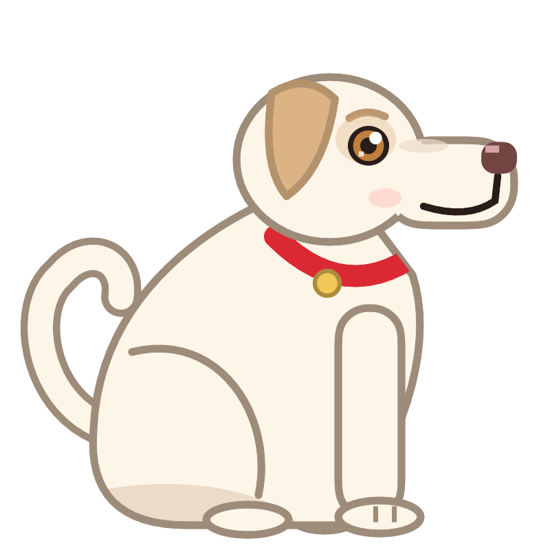
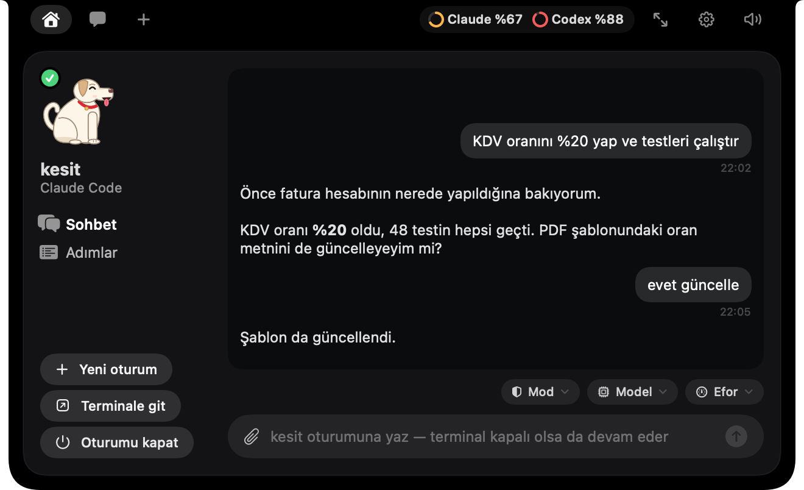
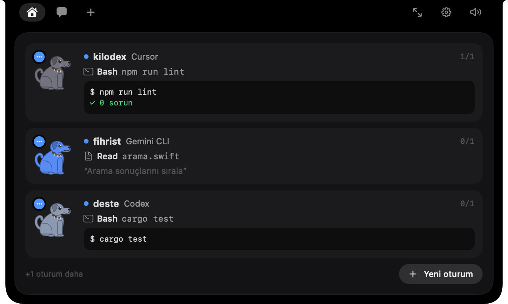
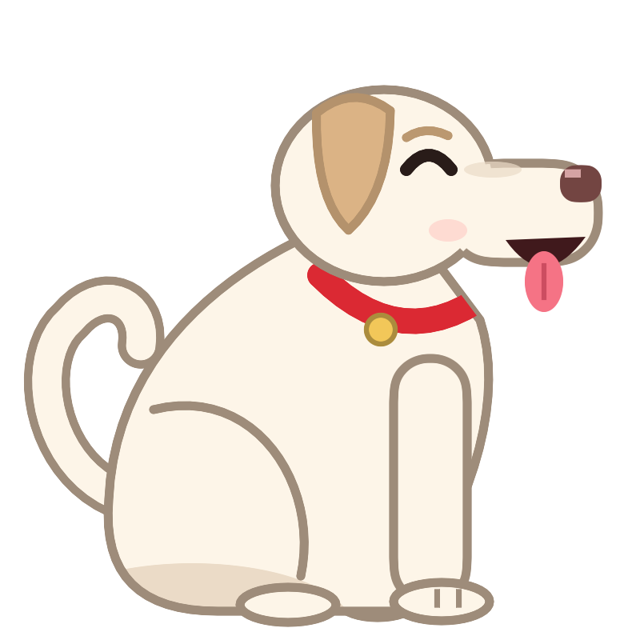
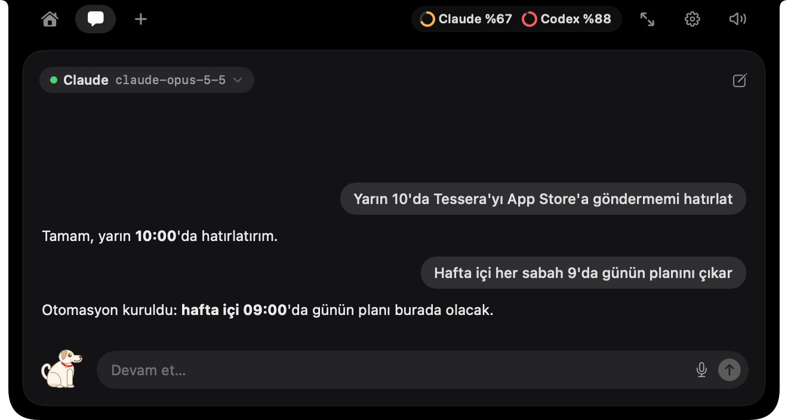
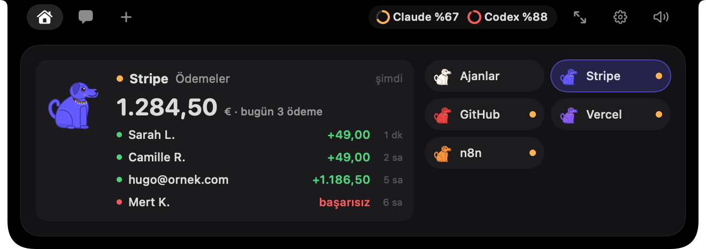
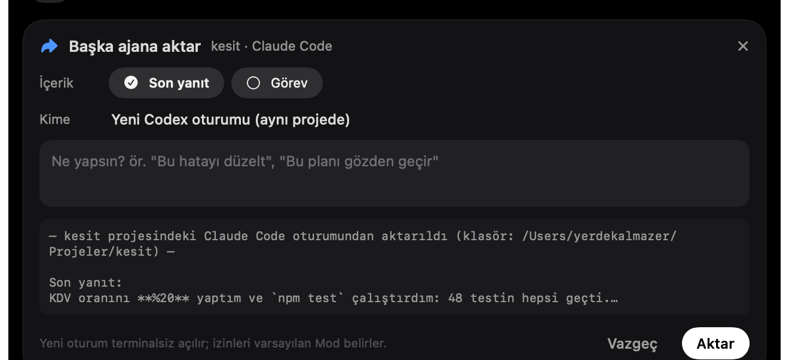

01 / Takip et
Her adımı
gör.
Dosyalar. Komutlar. Satır satır değişiklikler. Ajanın çalışırken sen de ne yaptığını bil; terminal arkada kalsa bile.


PEPE Mac için indirMac’inin çentiğinde bir yardımcı.
Pepe, Claude Code, Codex, Gemini CLI ve Cursor oturumlarını MacBook'un çentiğine taşır. Her adımı görürsün, izni bir dokunuşla verirsin, iş bitince haber verir.
Claude Code · Codex · Gemini CLI · Cursor · Copilot CLI · OpenCode
Bir dakikada Pepe
01 / Takip et
Dosyalar. Komutlar. Satır satır değişiklikler. Ajanın çalışırken sen de ne yaptığını bil; terminal arkada kalsa bile.
02 / Karar ver
Terminali aramadan, doğrudan çentikten. Ajan sorduğunda kart kendiliğinden açılır; Return izin verir, Esc reddeder. Soruların seçenekleri de orada.

03 / Devam et
Oturumuna çentikten yaz, kaldığın yerden devam et. Terminal kapalıysa Pepe işi arka planda sürdürür; adımlar ve cevap yine çentikte.

04 / Birlikte çalış
Paralel oturumlar, hepsi aynı yerde. Claude Code, Codex ya da Gemini CLI'ı çentikten başlat; her biri isterse kendi çalışma kopyasında, birbirine karışmadan.

05 / Haberin olsun
Sen işine odaklan, Pepe haber versin. Bir oturum bitince çentikte yeşil bir işaret yanar ve Pepe havlar.


Hav!06 / Aklında tutma
Hatırlatıcılar ve tekrarlayan otomasyonlar; Pepe'ye yazman yeter. Zamanı gelince, yine çentikte. Her sabah günün özeti de hazır.


07 / Seslen
Stripe, GitHub, Vercel ve Cal.com da çentikte. Servislerin bir bakış uzağında, cevaplar bir ses uzağında.


08 / Devret
Bir oturumdaki hatayı ya da sonucu tek tıkla başka bir ajana aktar: Claude'un bulduğunu Codex düzeltsin. Kime gideceğini sen seçersin.

Kurulum
Gereksinimler: macOS 14 Sonoma ya da üstü, Apple Silicon (M1 ve sonrası). Çentiği olmayan Mac'lerde ekranın üstüne bir çentik çizer.
Mac için indirAjanlar Pepe'ye yalnızca bu Mac'in içinden, gizli bir anahtarla ulaşır. Dışarıdan erişilemez.
Girdiğin API anahtarları yalnızca senin okuyabileceğin bir dosyada durur; Pepe sadece senin bağladığın servislere gider.
“OK Pepe” mümkünse cihazda tanınır, ses hiçbir yere gönderilmez. Brifing ve hatırlatmalar yapay zekâ kullanmaz.
Sık sorulanlar
Claude Code, Codex, Gemini CLI, Cursor, Copilot CLI ve OpenCode oturumlarını izler. Claude Code, Codex ve Gemini CLI'a çentikten yazabilir, yeni oturum da başlatabilirsin.
Ajanları izlemek, izin vermek ve oturumlara yazmak için hayır; ajanlar kendi hesabınla çalışır. Pepe'yle sohbet için Anthropic, OpenAI ya da Gemini anahtarı (ya da Ollama, LM Studio gibi yerel bir model), « OK Pepe » için Anthropic anahtarı gerekir.
Bu erken erişim sürümü henüz Apple'ın onay sürecinden (notarization) geçmedi. Kurulum adımındaki gibi bir kez Yine de Aç demen yeterli.
Şimdilik yalnızca Apple Silicon (M1 ve sonrası) için derleniyor.
Oturumları izlemek için hayır: adımlar, izinler ve geçmiş bu Mac'te gösterilir. Pepe yalnızca sen sohbet ettiğinde, sesle sorduğunda ya da proje hafızası özeti açıksa, gereken metni senin anahtarınla seçtiğin modele gönderir.
hi@tahayerdekalmazer.com adresine yazabilirsin.
Mac’inin yeni yardımcısı.
PEPE